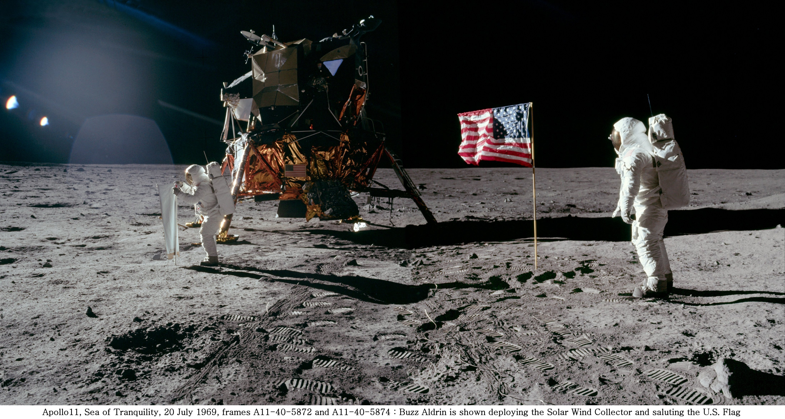
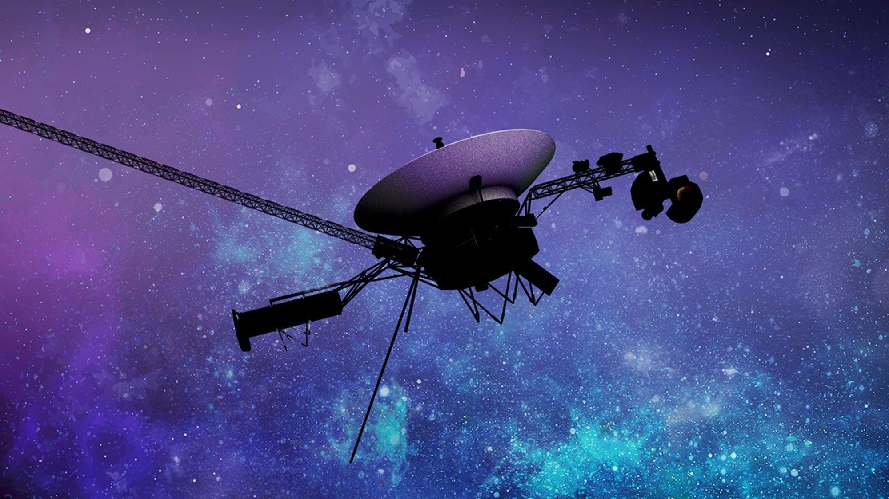
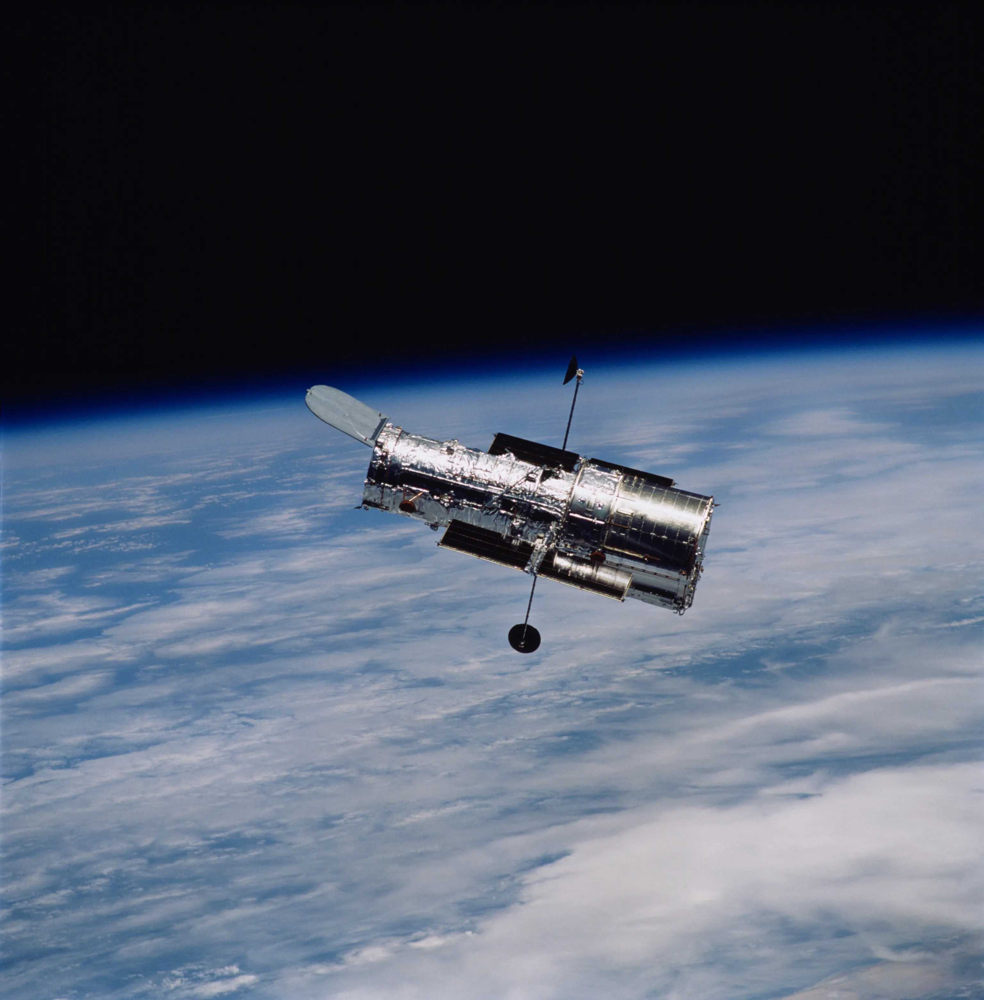
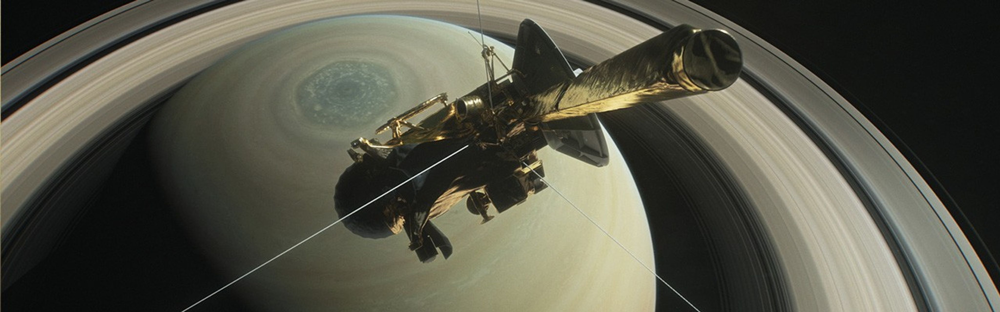
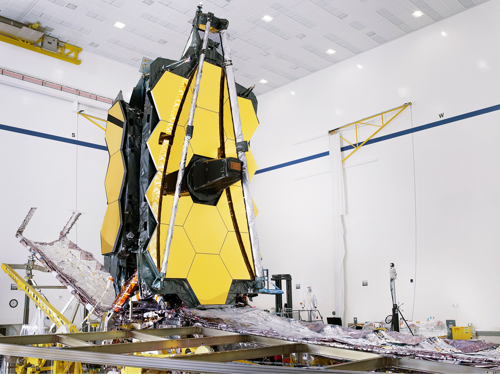

We are explorers by nature. Trace the majestic timeline of human civilization reaching toward the stars, from our first lunar footsteps to peering at the dawn of the universe.
Commander Neil Armstrong and lunar module pilot Buzz Aldrin formed the American crew that landed the Apollo Lunar Module Eagle. For the first time in billions of years, a species stepped foot onto another celestial body.

Voyager 1 and 2 were launched to take advantage of a favorable planetary alignment of the outer planets. They are now the farthest human-made objects in existence, currently drifting through interstellar space carrying the Golden Record—a message from humanity to the cosmos.

Launched into low Earth orbit, Hubble remains one of the largest and most versatile telescopes ever built. Its breathtaking visible-light images revolutionized astronomy, allowing humanity to see deep into galaxies billions of light-years away.

A collaborative mission to study Saturn and its complex system of rings and moons. It completed a legendary 20-year mission before deliberately plunging into Saturn's atmosphere to protect the potentially habitable moons, Enceladus and Titan.

The JWST is the most powerful telescope ever launched. Using infrared astronomy, its massive golden honey-comb mirrors can peer through thick dust clouds, looking back in time to capture light from the very first galaxies formed after the Big Bang.
